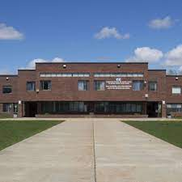

L`histoire De LTM

L'école secondaire Lake of Two Mountains, qui est située au 2105, rue Guy dans la ville de Deux
Montange, a été construit en 1983;il a remplacé l'ancien bâtiment du même nom qui était situé au 203
14e Rue.
Ce lycée compte aujourd'hui des centaines d'élèves, qui viennent de
diverses villes telles que : Deux-Montagnes, St-Eustache, Sainte-Marthe-sur-le-Lac,
St-Joseph, Oka, Mirabel et bien plus encore.
Les Clubes et activités

Bien que cette école soit particulièrement petite, nous avons un large éventail des activités scolaires telles que la robotique, le travail du bois, le club des écrivains, le comité de l'annuaire, etc. Il y a même des équipes sportives telles que Basketball, Hockey, Futsal, etc. Ces activités parascolaires sont grandement apprécié par les élèves de toute l'école.
En plus de nombreuses activités parascolaires, LTMHS organise de nombreuses sorties pour ses élèves. Pour par exemple, il n'est pas inhabituel pour les élèves des niveaux supérieurs de visiter des endroits à l'extérieur du pays à des fins ludiques et éducatives. En plus de cela, il y a des voyages plus petits pour n'importe quelle classe scolaire, ce qui permet aux étudiants de visiter les villes voisines, de patiner ou même d'aller à un carnaval d'Halloween !